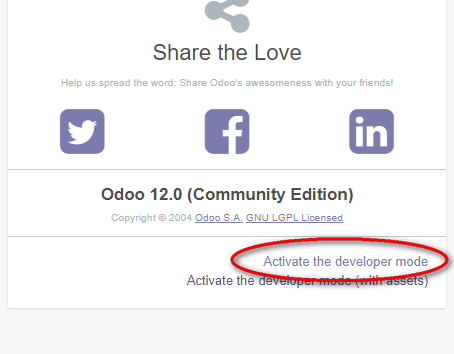
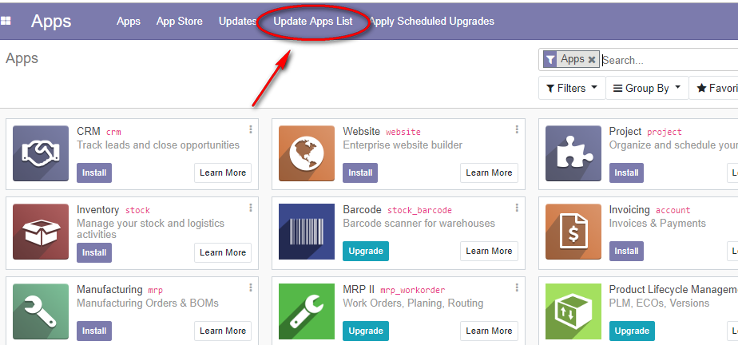
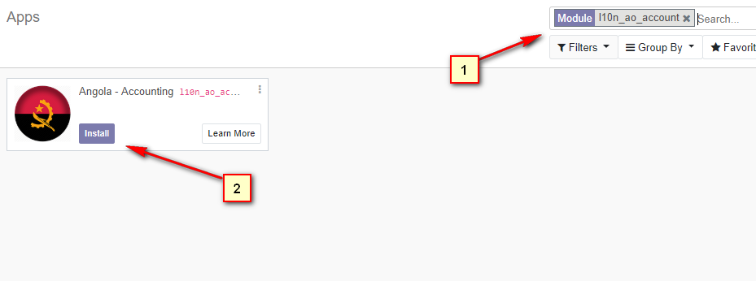
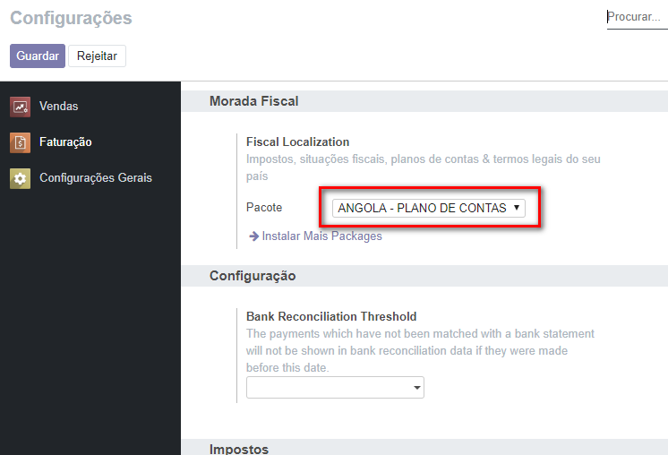

| Angola Basic Chart of Accounts |
This module contains basic setup for Angola chart of Accounts with basic localization data. Includes: - Account chart (move accounts); - Country provinces; - Active banks with SWIFT / BIC information; - Basic Tax setup (IVA); |
| Install instructions: This instructions works for both new database and existing database with existing chart of accounts. Note: Make sure to backup your data before installing the module to garantee everything runs as expected. 1- Activate Developer Mode: |
|  2- Update Apps List: |
|  3- Search for "l10n_ao_account" module and click Install: |
|  4- Check on "Invoicing | Configuration" for the new installed chart of accounts. |
|  |
| In order to be able to see full accounting in Odoo, please activate "Show Full Accounting Features" in Settings | Users |
For Odoo Development and Implementation services please contact us at: batalhadematos@gmail.com |